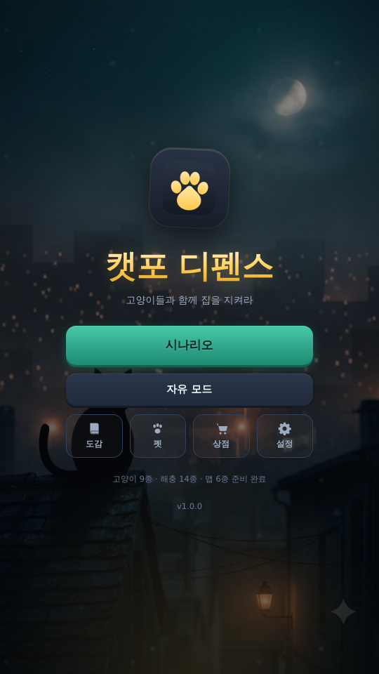
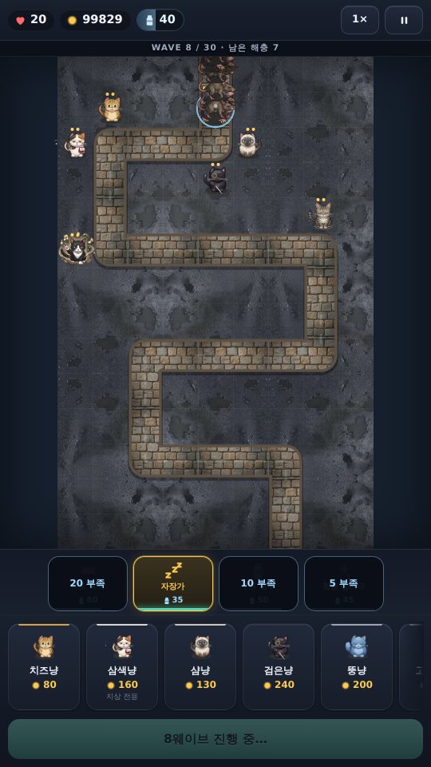
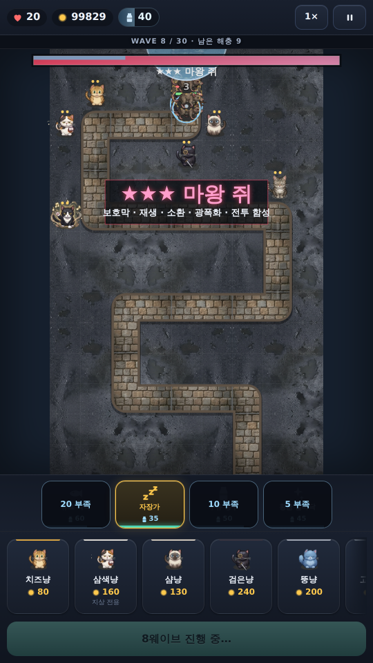
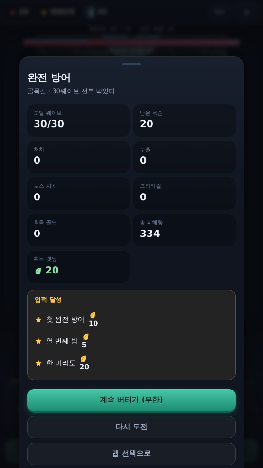
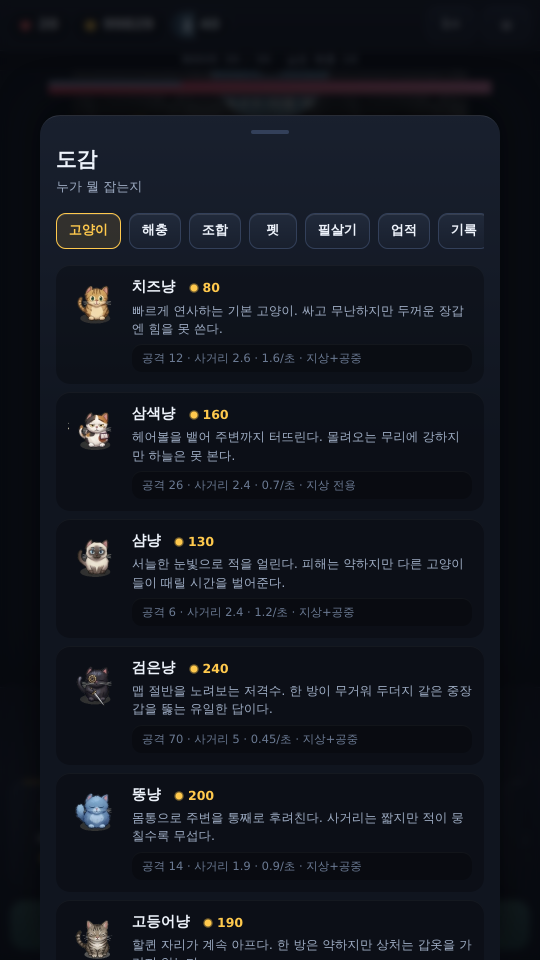
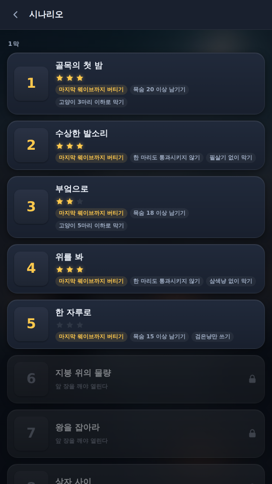
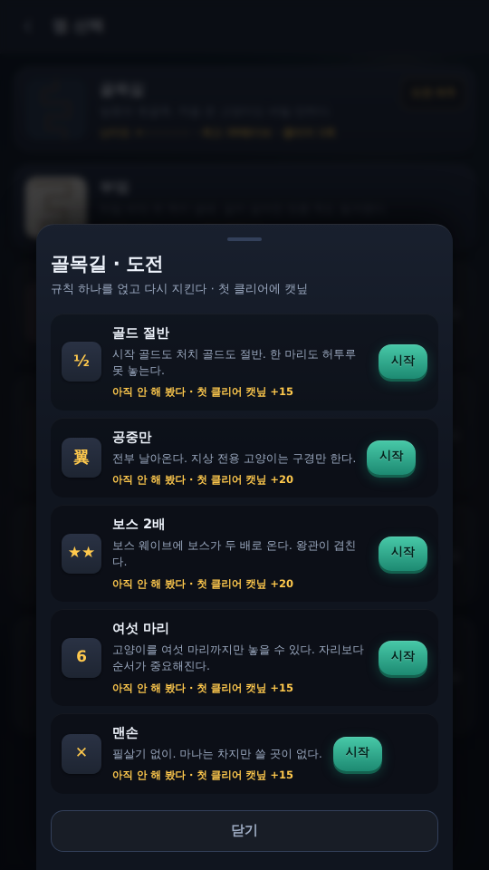
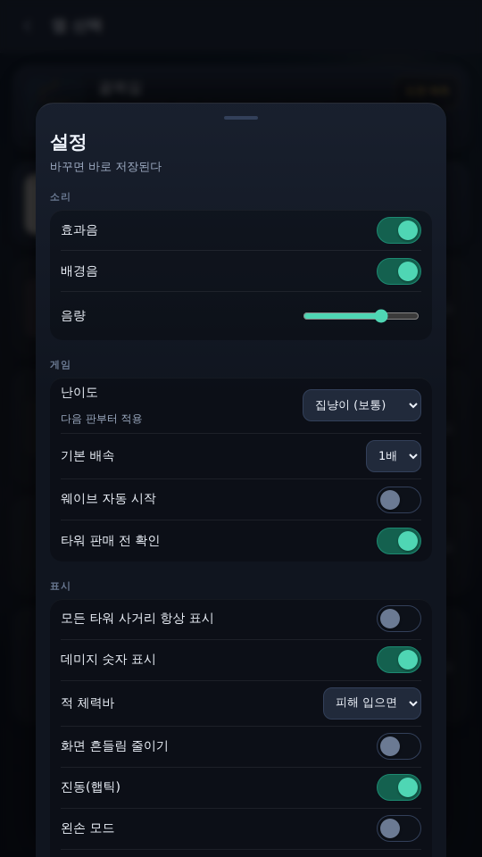

고양이 아홉 마리로 집을 지키는 타워디펜스
안드로이드 APK 받기
무료 · 광고 없음 · 인터넷 권한 없음
설치하려면 "출처를 알 수 없는 앱 설치"를 한 번 허용해야 한다 —
설치 방법
아이폰·아이패드거나 그냥 브라우저에서 해 보고 싶다면 → 브라우저에서 바로 하기








치즈냥(속사) · 삼색냥(광역) · 샴냥(둔화) · 검은냥(저격) · 뚱냥(범위) · 턱시도냥(버프) · 스핑크스냥(관통) · 러시안블루냥(연쇄) · 고등어냥(장갑 무시). 각 3레벨 + 캣닢으로 훈련 3단계.
체력만 많은 보스는 없다. 보호막 · 재생 · 소환 · 분열 · 광폭화 · 전투함성을 각자 다르게 갖는다. 마왕 쥐는 전부 갖는다.
컷신으로 이어지는 캠페인. 장마다 주 목표 1개 + 부 목표 2개, 별 최대 3개.
맵 6종을 끝까지, 표 밖으로 이어 가는 무한, 규칙 하나를 얹는 도전, 그리고 모두가 같은 판을 노는 주간 도전.
츄르 폭격 · 자장가 · 우유 홍수 · 황금 발바닥. 이어 쓰면 연계가 걸린다. 고양이를 어떻게 배치하느냐로 조합 7종이 열린다.
모든 파일이 앱 안에 있어 비행기 모드에서도 돈다. 기기 언어가 한국어가 아니면 영어로 뜬다.
앱은 없다. 대신 브라우저에서 바로 된다. 사파리로 여기를 열고 공유 → 홈 화면에 추가를 하면 주소창 없이 앱처럼 뜨고, 한 번 받아 두면 비행기 모드에서도 돌아간다.
자유 모드 6맵 · 시나리오 1~2막(18장) · 도전 5종 · 펫 · 훈련 · 무한 · 주간 도전. 진행도는 기기에 남는다.
시나리오 3막 · 도전 팩 2 · 스킨 팩. 잠가 둔 게 아니라 이 빌드에 파일이 없다. 결제도 없다.
상태바가 반투명으로 겹치고, 회전 잠금이 안 걸리고(가로로 눕히면 안내가 뜬다), 진동이 없다. iOS 사파리의 한계다.